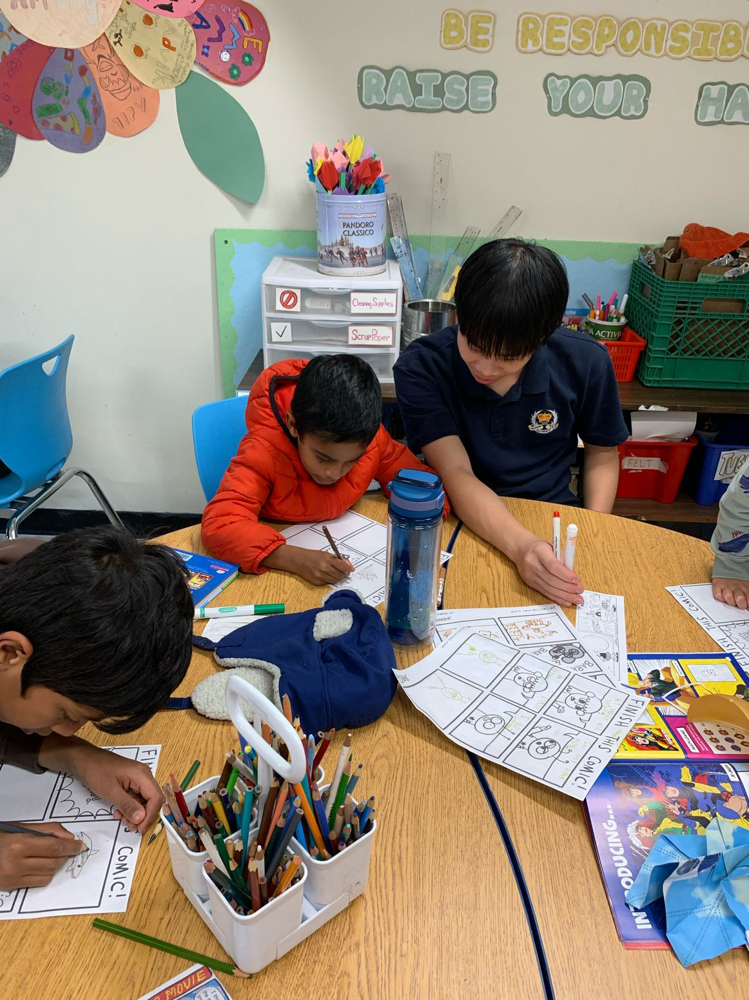

Shareable Art
Handmade cards, bookmarks, paintings, illustrations, small sculptures, and textiles/crafts.
Beyond the Studio gives artists and volunteers a way to create artwork, interactive activities, and simple art kits for child-serving organizations without needing to attend a physical workshop.
Create From AnywhereThis stock footage is atmospheric; once Beyond the Studio has its own contributor photographs, those can replace or accompany it.
No previous art experience is required. Projects can be adapted to different skill levels and interests.
Handmade cards, bookmarks, paintings, illustrations, small sculptures, and textiles/crafts.
Colouring pages, drawing sheets, finish-the-art prompts, collaborative illustrations, mini comics, and design challenges.
Printed activities, pencils or coloured pencils, erasers, optional sketchbooks, and simple assembled creative kits.

A volunteer can contribute with experience, without experience, with traditional materials, digitally, or through assembling resources that make it easier for someone else to create.
Volunteer Beyond the Studio